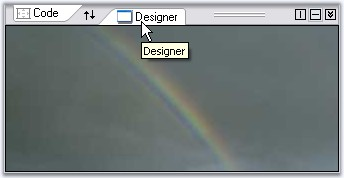

The properties which customizes the Splitter page are as follows.
|
TabSplitterContainer Property |
Description |
|
BorderStyle |
Sets border for the splitter page. |
|
BackgroundImage |
Sets the background image for the control. |
|
BackgroundImageLayout |
Sets the background image layout for the control. |
|
Image |
Lets you set image icons for the tabs. |
|
ImageTransparencyColor |
Indicates the transparent color for the tab image. |
|
Text |
Sets text for the tab. |
|
Tooltip |
Sets tooltip text for the tab. |
|
Visible |
Sets the visibility of the tab. |
|
[C#]
this.tabSplitterPage1.BorderStyle = System.Windows.Forms.BorderStyle.FixedSingle; this.tabSplitterPage1.BackgroundImage = ((System.Drawing.Image)(resources.GetObject("tabSplitterPage1.BackgroundImage"))); this.tabSplitterPage1.BackgroundImageLayout = System.Windows.Forms.ImageLayout.Center; this.tabSplitterPage1.Image = ((System.Drawing.Image)(resources.GetObject("tabSplitterPage1.Image"))); this.tabSplitterPage1.Text = "Designer"; this.tabSplitterPage1.Tooltip = "Designer"; this.tabSplitterPage1.Visible = true; |
|
[VB.NET]
Me.tabSplitterPage1.BorderStyle = System.Windows.Forms.BorderStyle.FixedSingle Me.tabSplitterPage1.BackgroundImage = DirectCast((resources.GetObject("tabSplitterPage1.BackgroundImage")), System.Drawing.Image) Me.tabSplitterPage1.BackgroundImageLayout = System.Windows.Forms.ImageLayout.Center Me.tabSplitterPage1.Image = DirectCast((resources.GetObject("tabSplitterPage1.Image")), System.Drawing.Image) Me.tabSplitterPage1.Text = "Designer" Me.tabSplitterPage1.Tooltip = "Designer" Me.tabSplitterPage1.Visible = True |

Figure 1111: SplitterPage Settings : BorderStyle = "FixedSingle"; Tooltip = "Designer"; Text = "Designer"